练习: 使用壳对
目标
成功完成此练习后，您将能够：
- 为壳模型定义约束。
- 定义解析载荷函数。
- 自动选择要施加载荷的多个曲面。
- 定义壳对。
- 在后处理器中估算壳应力。
假定背景
在本练习中，您将调查薄壁钣金件水箱中的静水压力引起的应力和变形。为便于分析，请忽略在外部载荷下变形的壁的硬化以及水箱壁内部载荷的相关变化。因此，执行线性静态分析时不考虑结构中产生的大变形效果。
静水压力具有特定的几何分布，默认情况下，该几何分布未在 Creo Simulate 中定义。使用本练习中的信息可帮助衍生数学关系式驱动的其他类型的载荷。其他典型示例可能包括风载荷或接触压力。
还可以了解定义壳理想化的相关信息。水箱的壁极薄，且厚度均匀。因此它最好选择使用壳元素，而非默认实体。
“关闭窗口”(Close Window) “拭除未显示的”(Erase Not Displayed)
“拭除未显示的”(Erase Not Displayed) 
 Simulate_Modeling\ShellPairsB
Simulate_Modeling\ShellPairsB
 START_TANK_SIMULATE.PRT
START_TANK_SIMULATE.PRT
-
任务 1. 打开并调查几何模型。
1. Creo Simulate 用户：请注意我们仅分析模型的四分之一，因为载荷和几何都是对称的。这样可以减少计算时间和硬盘资源。
2. Creo Parametric 用户：恢复特征 SYMMETRY_CUT，以创建完整 CAD 模型的四分之一部分。

根据使用的 config.pro 文件，您可能需要在模型树设置中开启隐含对象的可见性，然后才能恢复隐含特征。
-
任务 2. 调查模型属性并将材料分配到模型。
1. 单击“文件”(File) > “准备”(Prepare) > “模型属性”(Model Properties)。将出现“模型属性”(Model Properties) 对话框。
2. 查看单位、定义的材料及关联的属性。单击“关闭”(Close)。
3. 在功能区中，选择“主页”(Home) 选项卡。
4. 在“材料”(Material) 组中单击“材料分配”(Material Assignment)
 。将出现“材料分配”(Material Assignment) 对话框。
。将出现“材料分配”(Material Assignment) 对话框。
5. 确认“材料”(Material) 字段中为 Stainless_Steel。单击“确定”(OK)。
-
任务 3. 在模型中定义壳理想化。
1. 在功能区中，选择“精细模型”(Refine Model) 选项卡。
2. 在“理想化”(Idealizations) 组中，单击“壳对”(Shell Pair) 下拉菜单，然后选择“检测壳对”(Detect Shell Pairs)。“自动检测壳对”(Auto Detect Shell Pairs) 对话框随即出现。
3. 校验“使用几何分析”(Use Geometry Analysis) 已被选定。
4. 在“特征厚度”(Characteristic Thickness) 字段中键入 3。
5. 单击“开始”(Start)。“自动检测壳对”(Auto Detect Shell Pairs) 对话框随即关闭。
或者，也可清除“使用几何分析”(Use Geometry Analysis) 复选框。由于结构是使用 Creo Parametric 壳和薄板特征创建的，因此可在不使用几何分析方法的情况下自动找到壳对。这仅可以在使用以下 Creo Parametric 特征时完成：壳、筋、钣金件零件、加厚曲面和所有使用“薄板”(Thin) 选项创建的特征。
6. 在模型树中，展开“理想化”(Idealizations) 和“壳对”(Shell Pairs)。请注意，检测到 55 个壳对。
7. 在功能区中，选择“精细模型”(Refine Model) 选项卡。
8. 从 AutoGEM 组中单击“审阅几何”(Review Geometry)
 。“模拟几何”(Simulation Geometry) 对话框随即出现。
。“模拟几何”(Simulation Geometry) 对话框随即出现。
9. 单击“应用”(Apply)。请注意成功的中间平面压缩，如图所示。
10. 单击“关闭”(Close)。
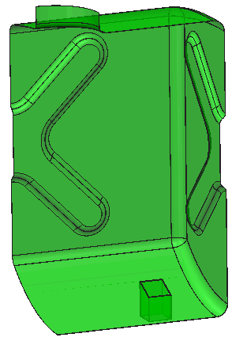
-
任务 4. 网格化模型。
1. 在功能区中，选择“精细模型”(Refine Model) 选项卡。
2. 从 AutoGEM 组中单击“控制”(Control) 下拉菜单，然后选择“最大元素尺寸”(Maximum Element Size)
 。将出现“最大元素尺寸控制”(Maximum Element Size Control) 对话框。
。将出现“最大元素尺寸控制”(Maximum Element Size Control) 对话框。
3. 完成以下步骤：
- 从“参考”(References) 下拉列表中选择“元件”(Components)。
- 在“元素尺寸”(Element Size) 字段中键入 400。
4. 单击“确定”(OK)。
5. 在功能区中，选择“精细模型”(Refine Model) 选项卡。
6. 从 AutoGEM 组中单击 AutoGEM 下拉菜单，然后选择“设置”(Settings)。“AutoGEM 设置”(AutoGEM Settings) 对话框随即出现。
7. 完成以下步骤：
- 选择“限制”(Limits) 选项卡。
- 在“最大边”(Edge Max) 字段中键入 165.00。
- 在“最小边”(Edge Min) 字段中键入 15.00。
- 在“最大面”(Face Max) 字段中键入 165.00。
- 在“最小面”(Face Min) 字段中键入 15.00。
- 在“最大长宽比”(Max Aspect Ratio) 字段中键入 7。
- 在“最大边翻转 (度)”(Max Edge Turn (Degrees)) 字段中键入 85。
8. 单击“确定”(OK)。
9. 在功能区中，选择“精细模型”(Refine Model) 选项卡。
10. 从 AutoGEM 组中单击AutoGEM
 。将出现 AutoGEM 对话框。
。将出现 AutoGEM 对话框。
11. 单击“创建”(Create)。请注意，已创建了超过 300 个壳元素。
12. 在所有对话框中单击“关闭”(Close)，当出现保存网格的提示时，单击“是”(Yes)。
-
任务 5. 定义约束。
存在两个定义的对称约束，水箱的每条纵向切口边一个。第一个约束是使用对称镜像约束定义的。第二项约束是使用传统位移约束定义的。
1. 在功能区中，选择“主页”(Home) 选项卡。
2. 单击“约束”(Constraints) 组下拉菜单并选择“对称”(Symmetry)
 。将出现“对称约束”(Symmetry Constraint) 对话框。
。将出现“对称约束”(Symmetry Constraint) 对话框。
3. 从“类型”(Type) 下拉菜单中选择“镜像”(Mirror)。
4. 在模型上，选择显示的边。
5. 单击“确定”(OK)。
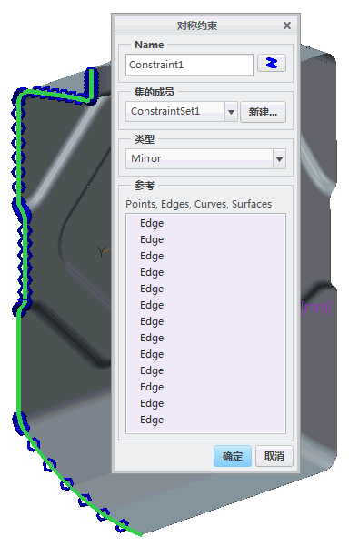
6. 在功能区中，选择“主页”(Home) 选项卡。
7. 在“约束”(Constraints) 组中单击“位移”(Displacement) 。将出现“约束”(Constraint) 对话框。
8. 从“参考”(References) 下拉菜单中选择“边/曲线”(Edges/Curves)。
9. 在模型中，选择显示的边。
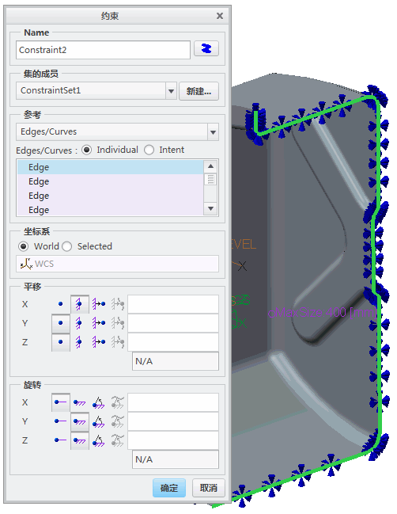10. 在“平移”(Translation) 部分，单击“自由平移”(Free Translation)
 ，用于 Y 和 Z 平移。
，用于 Y 和 Z 平移。
11. 在“旋转”(Rotation) 部分，单击“固定的旋转”(Fixed Rotation)
 用于 Y 和 Z 旋转。
用于 Y 和 Z 旋转。
12. 单击“确定”(OK)。
镜像对称约束仅可用于平行或垂直的对称平面。传统的“位移”约束可能会需要一个额外的参考坐标系，但可用于对称平面之间的任何角度。
13. 在功能区中，选择“主页”(Home) 选项卡。
14. 在“约束”(Constraints) 组中单击“位移”(Displacement) 。将出现“约束”(Constraint) 对话框。
15. 从“参考”(References) 下拉菜单中选择“边/曲线”(Edges/Curves)。
16. 在模型中，选择显示的四条边。
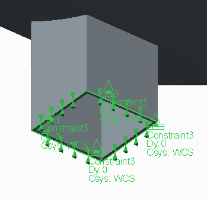17. 在“平移”(Translation) 部分中，针对 X 和 Z 平移单击“自由平移”(Free Translation)
。
18. 单击“确定”(OK)。
-
任务 6. 定义载荷。
1. 在功能区中，选择“主页”(Home) 选项卡。
2. 在“载荷”(Loads) 组中单击“压力载荷”(Pressure Load) 。“压力载荷”(Pressure Load) 对话框随即出现。
3. 单击“曲面集”(Surface Sets)。将出现“曲面集”(Surface Sets) 对话框。
4. 单击“添加”(Add)。
5. 在模型中，单击水箱的任意一个内部曲面。选定曲面会在“锚点”(Anchor) 字段中列出。
6. 选择“种子和边界曲面”(Seed and boundary surfaces)。
7. 在“边界曲面”(Bounding Surfaces) 字段中单击。
8. 在模型中，选择显示的曲面。
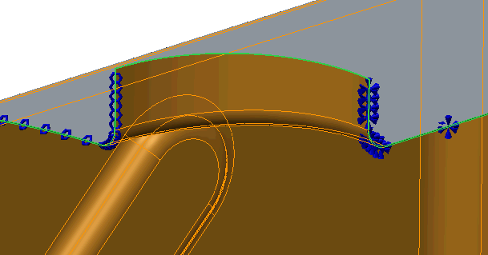9. 在对话框的“集”(Set) 部分中，用于种子和边界曲面的计数应该是 51。在“曲面集”(Surface Sets) 对话框中，单击“确定”(OK) 返回到“压力载荷”(Pressure Load) 对话框。
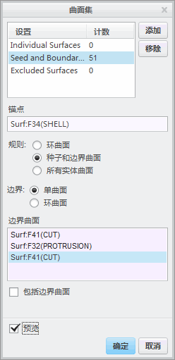10. 单击“高级”(Advanced) 展开载荷定义选项。
11. 从“空间变化”(Spatial Variation) 下拉菜单中选择“坐标函数”(Function of Coordinates)。
12. 单击“函数”(Function) 。将出现“函数”(Functions) 对话框。
13. 单击“新建”(New)。将出现“函数定义”(Function Definition) 对话框。
14. 在“名称”(Name) 字段中键入 pressure_hydrostatic。
15. 在“坐标系”(Coordinate System) 部分中，选择“选定”(Selected)。
16. 在模型树中，展开“模拟特征”，然后选择 LEVEL。
LEVEL 坐标系的原点是水位。因此，水箱底部的压力量级最大，在 LEVEL 的原点处为 0。
17. 在“符号表达式”(Symbolic Expression) 字段中键入 if(z>0,1e-9*9810*z,0)。
18. 单击“确定”(OK) 返回到“函数”(Functions) 对话框。在“警告”(Warning) 对话框中，单击“确定”(OK)。
19. 在“函数”(Functions) 对话框中，单击“确定”(OK) 返回到“压力载荷”(Pressure Load) 对话框。
20. 在“值”(Value) 字段中键入 1。
21. 单击“预览”(Preview) 查看施加的载荷。
22. 单击“确定”(OK)。
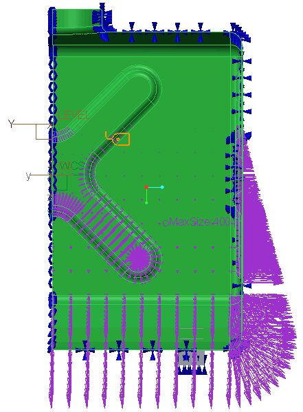
-
任务 7. 定义并运行静态分析。
1. 在功能区中，选择“主页”(Home) 选项卡。
2. 在“运行”(Run) 组中单击“分析和研究”(Analyses and Studies)
 。将出现“分析和设计研究”(Analyses and Design Studies) 对话框。
。将出现“分析和设计研究”(Analyses and Design Studies) 对话框。
3. 单击“文件”(File) > “新建静态分析”(New Static)。将出现“静态分析定义”(Static Analysis Definition) 对话框。
4. 完成以下步骤：
- 在“名称”(Name) 字段中键入 tank_hydro。
- 选择在“约束集/元件”(Constraint Set/Component) 和“载荷集/元件”(Load Set/Component) 部分中显示的约束集和载荷集。
- 选择“收敛”(Convergence)·选项卡，然后从“方法”(Method) 下拉菜单中单击“单通道自适应”(Single-Pass Adaptive)。
5. 单击“确定”(OK) 返回到“分析和设计研究”(Analyses and Design Studies) 对话框。
6. 单击“配置运行设置”(Configure Run Settings)
 。将出现“运行设置”(Run Settings) 对话框。
。将出现“运行设置”(Run Settings) 对话框。
7. 默认情况下，结果和临时输出目录被设置在工作目录中。两种分析都储存在此位置。单击“确定”(OK)。
8. 在“分析和设计研究”(Analyses and Design Studies) 对话框中选择刚刚定义的分析，然后单击“开始运行”(Start Run)
 。单击“是”(Yes) 以运行交互诊断。
。单击“是”(Yes) 以运行交互诊断。
9. 分析完成后，单击“显示研究状况”(Display Study Status)
 查看汇总报告。
查看汇总报告。
-
任务 8. 创建结果窗口并检查结果。
1. 在“分析和设计研究”(Analyses and Design Studies) 窗口中选择 tank_hydro。
2. 单击“审阅结果”(Review Results)
 。将出现“结果窗口定义”(Result Window Definition) 对话框。
。将出现“结果窗口定义”(Result Window Definition) 对话框。
3. 完成以下步骤：
- 校验已将“条纹”(Fringe) 选定为“显示”(Display) 类型。
- 选择“数量”(Quantity) 选项卡。
- 从下拉菜单中选择“位移”(Displacement)。
- 从“分量”(Component) 下拉菜单中选择“模”(Magnitude)。
- 选择“显示选项”(Display Options) 选项卡。如图所示完成字段。
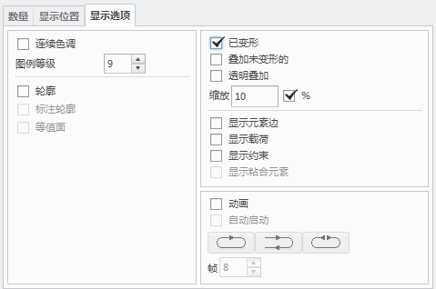4. 单击“确定并显示”(OK and Show)。
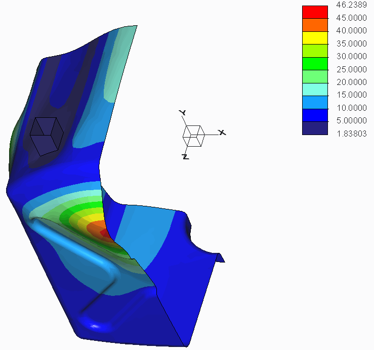5. 为 von Mises 应力创建第二个结果窗口。请注意，在“包括来自壳的作用”(Include contributions from shells) 部分，已选择所有应力元件，且默认情况下使用壳的“顶部和底部”(Top and Bottom) 作为显示位置。
壳的“顶部和底部”确保您正在查看的壳曲面的应力指向您所在的屏幕方向。这种情况下，没有必要考虑哪个是壳曲面的顶部，哪个是底部。
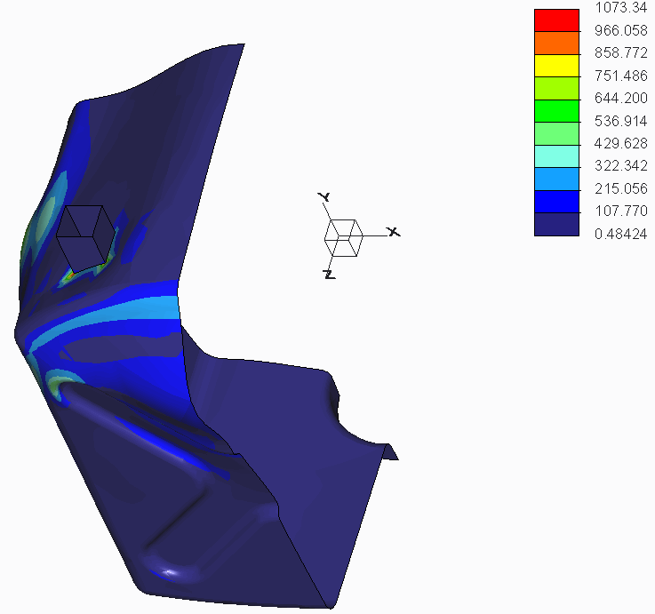6. 为 von Mises 应力创建第三个结果窗口。在“包括来自壳的作用”(Include contributions from shells) 部分，仅选择“膜”(Membrane)。
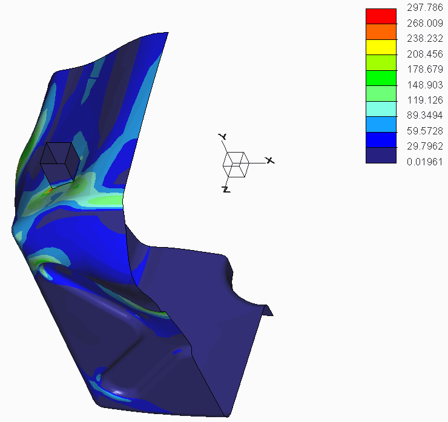7. 为 von Mises 应力创建第四个结果窗口。在“包括来自壳的作用”(Include contributions from shells) 部分，仅选择“弯曲”(Bending)。
使用的线性理论不考虑载荷下的变形引起的壁的硬化。要考虑这种效果，必须执行大位移分析。忽略这种效果通常会导致分析的位移和应力比真实的结构性行为更大。
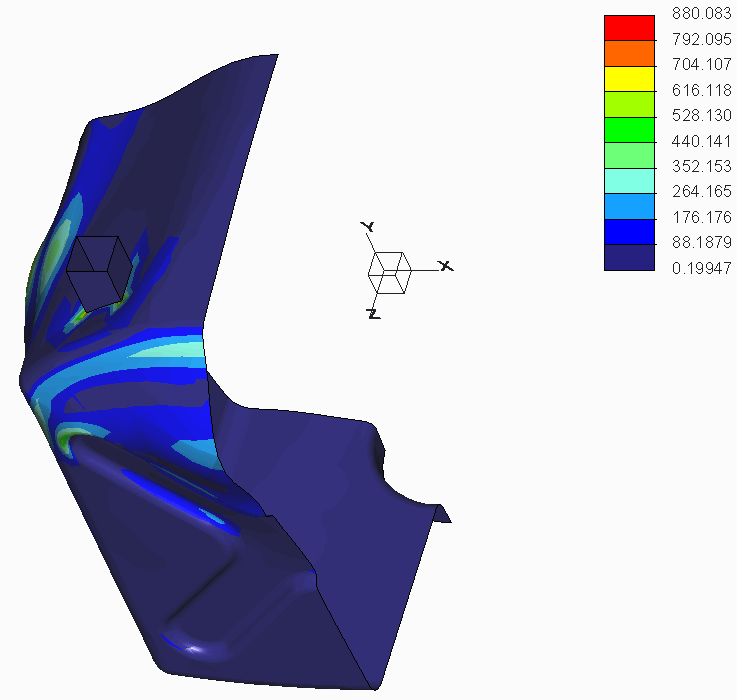8. 单击“文件”(File) > “退出结果”(Exit Results) 返回至 Creo Simulate。在“消息”(Message) 对话框中单击“否”(No)。
9. 在“分析和设计研究”(Analyses and Design Studies) 对话框中，单击“关闭”(Close)。
10. 单击“文件”(File) > “管理会话”(Manage Session) > “拭除当前”(Erase Current) 以关闭显示的窗口，并从内存中拭除模型。
11. 在拭除确认提示中单击“确定”OK。
练习就此结束。